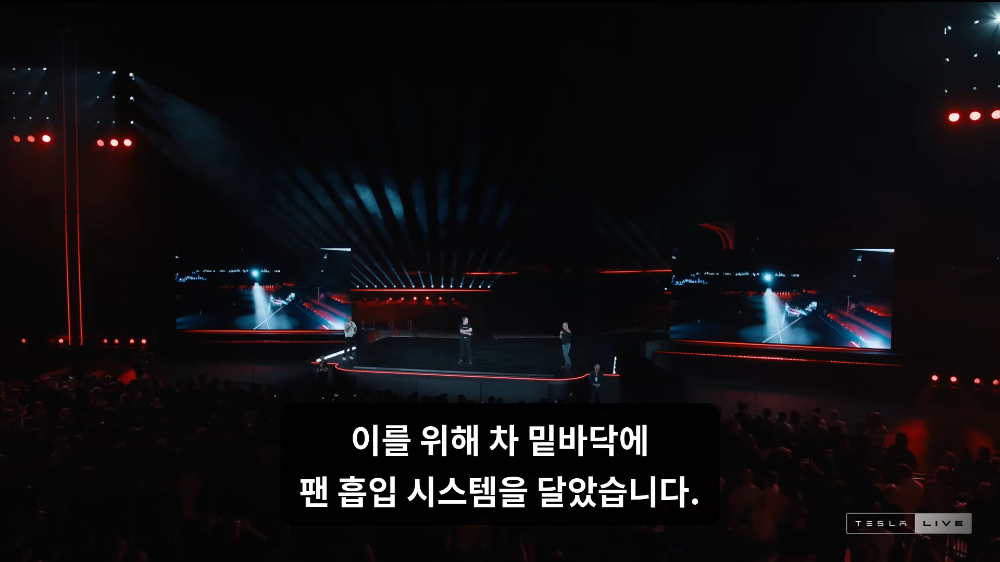
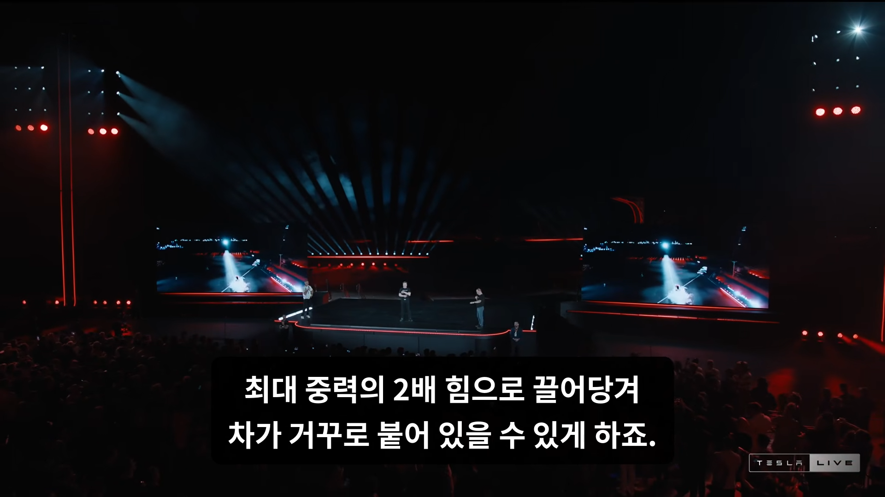
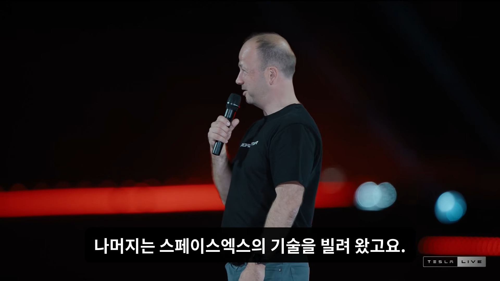
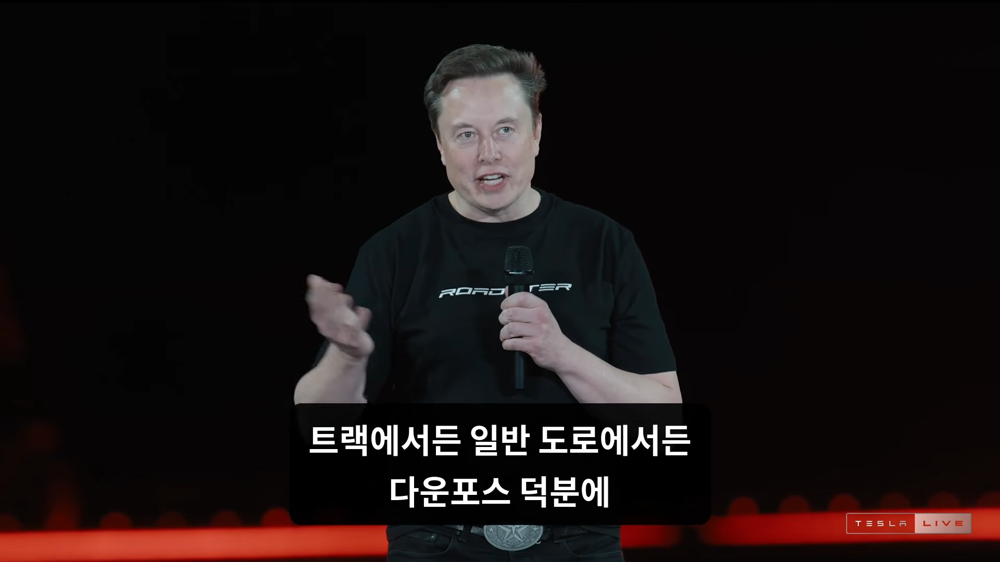
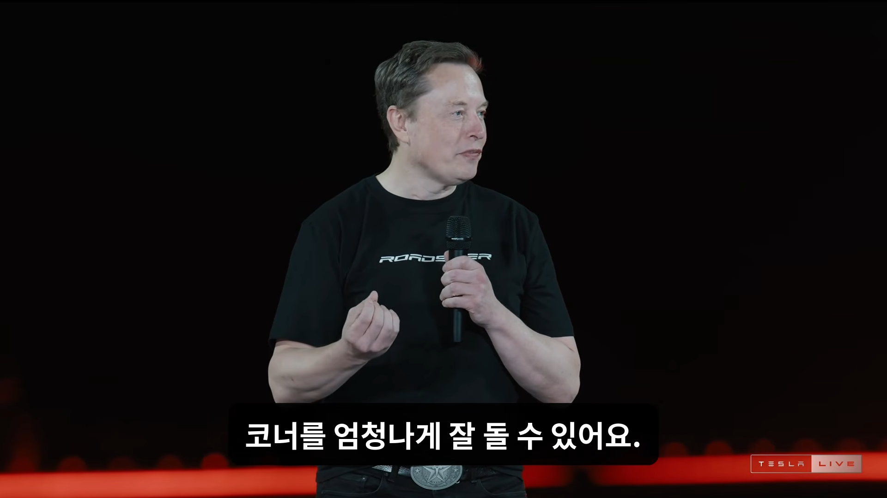
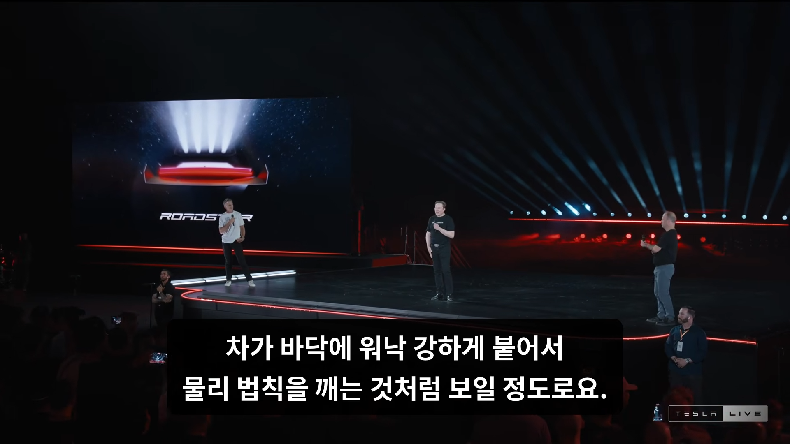
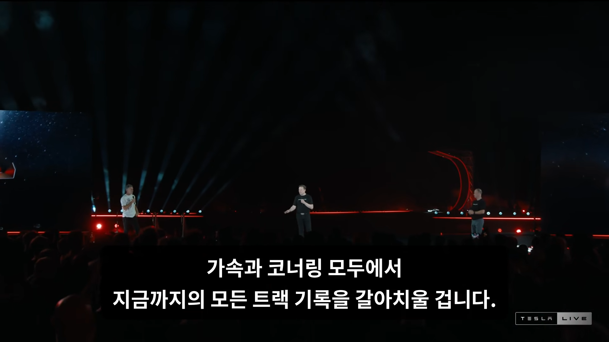
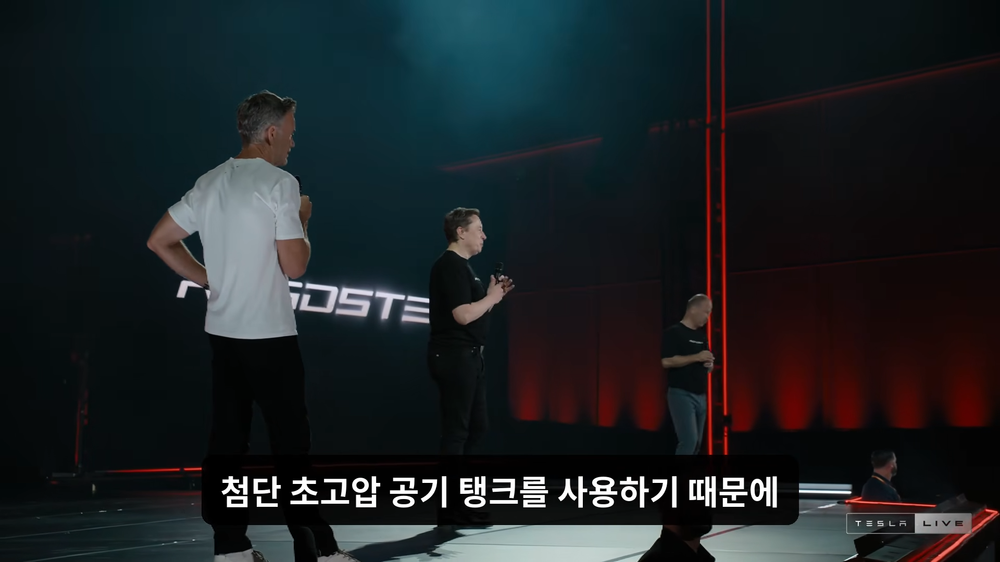
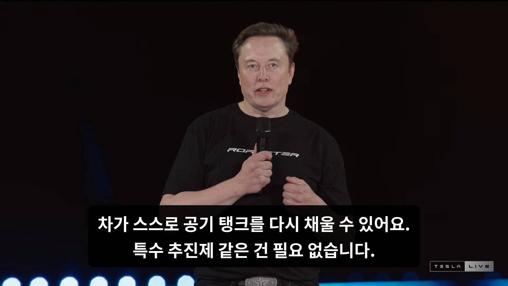
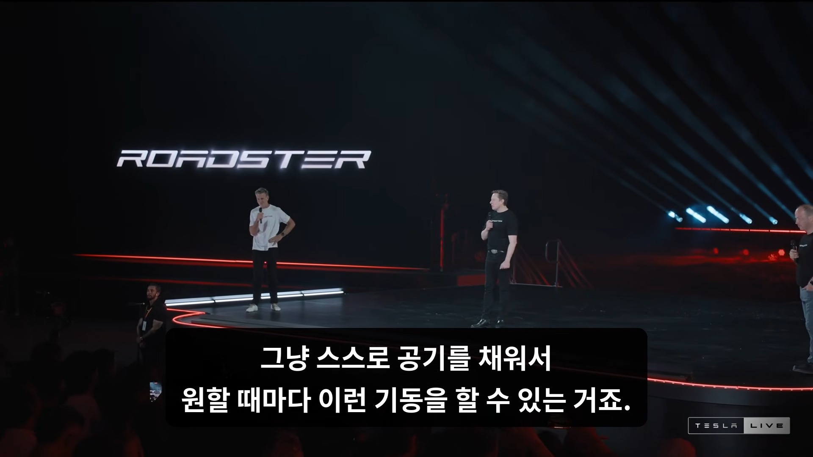

오늘 시작부터 사람들을 충격에 빠트렸던 접착(?) 장면
테슬라는 원리에 대해 다음과 같이 설명했다



흡기팬을 달아서 강력하게 흡입하는 원리라고 함
그렇구나..
근데 차를 거꾸로 붙여서 뭐에다 씀?!에 대해
일론 머스크는 다음과 같이 말했다




강력한 다운포스 덕분에 원심력을 무시한 코너링과 주행이 가능하다는 것
그리고 이 기술이 더 충격적인 것은



압축공기로 하는 거라
따로 뭘 채우고 하는 게 아닌
그냥 차가 다시 충전할 수 있다고 함
통풍시트도 없겠지? 안사야겟다